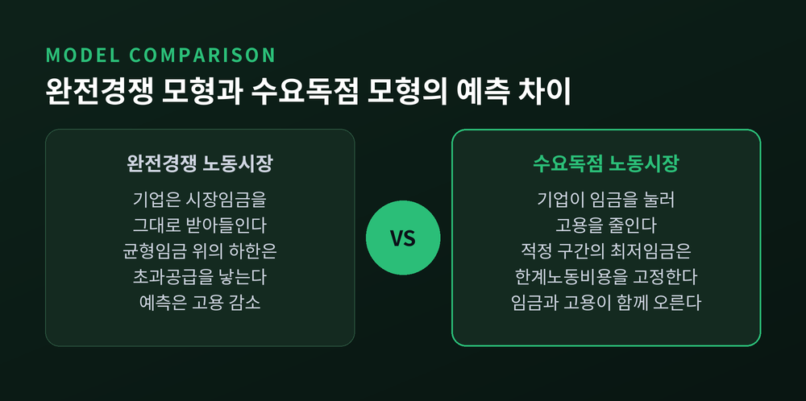
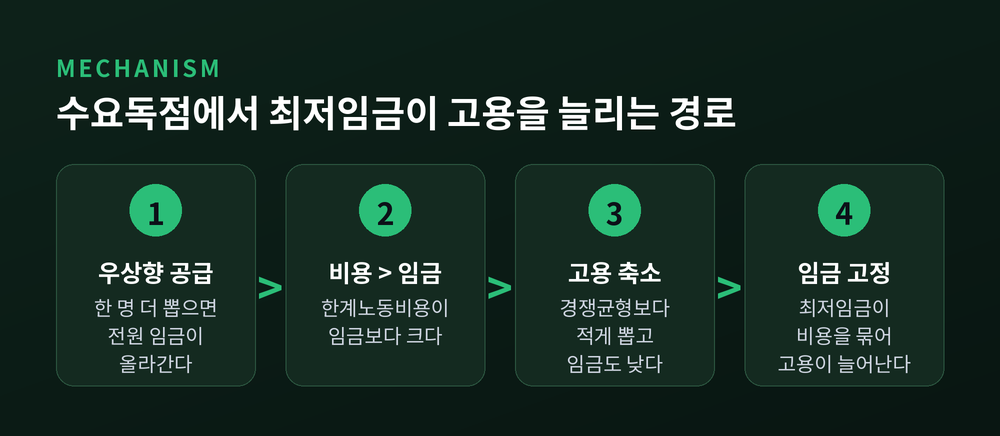
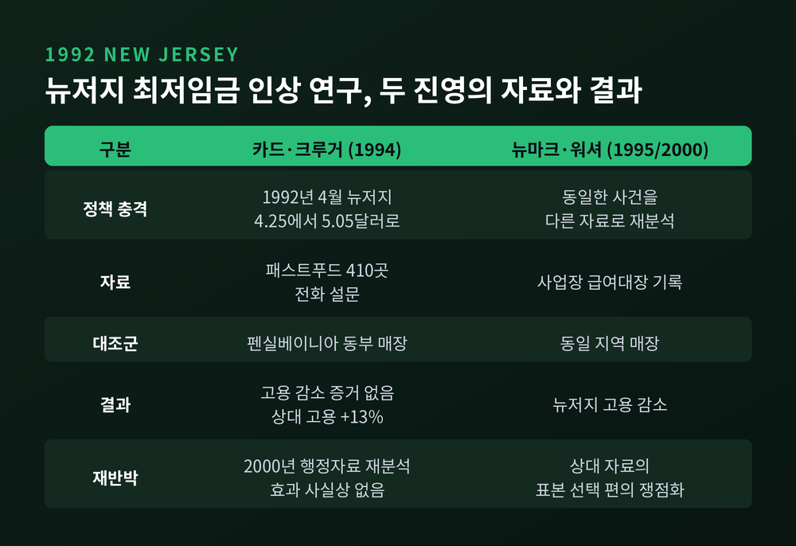
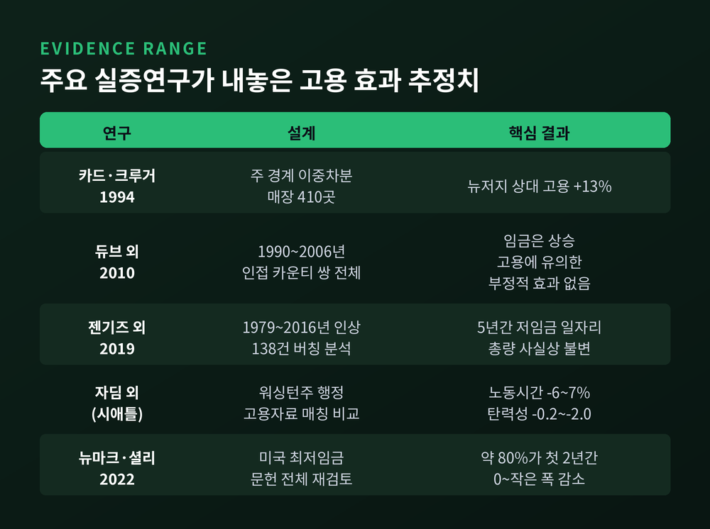
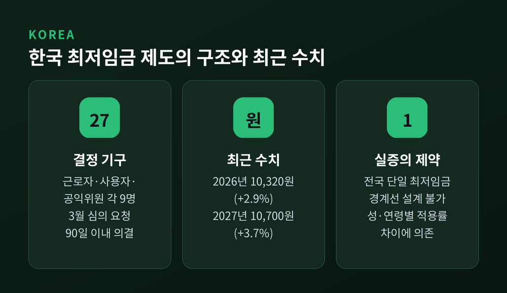

최저임금 인상과 고용, 수요독점 모형이 뒤집은 경제학 통념 정리
이번 글에서는 최저임금 인상이 고용을 줄이는가를 두고 30년 넘게 이어진 논쟁을 정리해 보겠습니다. 교과서의 표준 답과, 그 답을 흔든 수요독점 모형, 그리고 양쪽 실증 결과를 함께 놓겠습니다. 어느 진영의 주장을 옹호하려는 글이 아니라, 경제학이 같은 질문에 왜 다른 답을 내놓는지를 들여다보는 글입니다.
■ 교과서가 먼저 가르치는 답
경제학 입문서를 펼치면 최저임금은 대체로 첫 학기에 등장합니다.
설명은 단순합니다. 노동시장이 완전경쟁이라고 가정합니다. 개별 기업은 시장에서 정해진 임금을 그대로 받아들이는 가격수용자입니다. 여기에 균형임금보다 높은 가격 하한을 걸면, 일하고 싶은 사람은 늘고 사람을 쓰려는 기업은 줄어듭니다. 남는 것은 초과공급, 곧 실업입니다.
이 예측은 오랫동안 합의에 가까웠습니다. Card와 Krueger가 1994년 논문에서 직접 밝혔듯이, 그 시점까지 "최저임금 인상이 고용을 줄인다"는 것은 경제학자들 사이의 폭넓은 공감대였습니다.
문제는 이 결론이 가정 하나에 전적으로 기대고 있다는 점입니다. 기업이 임금을 주어진 것으로 받아들인다는 가정 말입니다.

■ 사는 쪽이 힘을 가질 때 — 수요독점 모형
수요독점은 독점의 거울상입니다. 파는 쪽이 하나인 것이 독점이라면, 사는 쪽이 힘을 가진 것이 수요독점입니다. 노동시장에서는 고용주가 그 위치에 섭니다.
핵심은 기업이 마주하는 노동공급 곡선이 우상향한다는 데 있습니다. 한 명을 더 뽑으려면 임금을 올려야 하고, 올린 임금은 기존 직원 전원에게도 적용됩니다. 그래서 한 명을 더 고용할 때 실제로 늘어나는 비용(한계노동비용)은 그 사람에게 주는 임금보다 큽니다.
기업은 한계노동비용이 한계수입생산과 같아지는 지점에서 고용을 멈춥니다. 그리고 그 고용량에 해당하는, 노동공급곡선 위의 더 낮은 임금을 지불합니다.
결과는 두 가지입니다. 임금은 노동이 실제로 만들어내는 가치보다 낮게 눌리고, 고용량도 경쟁균형보다 적습니다. 미국 전미경제연구소(NBER)는 이 상태를 "고용주가 낮은 임금으로 상당수 노동자를 고용·유지할 수 있지만, 그 대가로 비효율적으로 낮은 고용 수준이 유지된다"고 설명합니다.
여기에 최저임금을 걸면 이야기가 달라집니다.
최저임금이 수요독점 임금보다 높고 경쟁균형 임금보다는 낮은 구간에 놓이면, 그 구간에서 기업의 한계노동비용은 최저임금 수준으로 고정됩니다. 한 명을 더 뽑아도 기존 직원 임금을 올려줄 필요가 없어지기 때문입니다. 이제 기업은 고용을 늘리는 쪽이 이익입니다. 임금과 고용이 동시에 오릅니다.
"임금을 올리면 고용이 준다"가 뒤집히는 지점이 바로 여기입니다.
다만 조건이 붙습니다. 최저임금이 그 구간을 넘어 지나치게 높아지면, 수요독점 모형에서도 고용은 다시 감소합니다. 미 의회예산처(CBO)가 2019년 설명자료에서 두 모형을 나란히 놓으며 강조한 것도 이 조건부성입니다. 수요독점은 "최저임금은 언제나 좋다"는 결론이 아니라, "효과가 수준에 달려 있다"는 결론을 줍니다.
예전에는 수요독점을 탄광촌의 유일한 고용주 같은 특수한 사례로만 생각했습니다. 지금은 다르게 봅니다. 현대 이론은 구직 탐색 비용, 이직 비용, 통근 제약, 정보 비대칭 때문에 노동자가 즉시 다른 직장으로 옮기지 못한다는 점에서 지배력이 생긴다고 설명합니다. 기업이 하나뿐이 아니어도 수요독점적 힘은 존재할 수 있다는 뜻입니다.

■ 1992년 뉴저지 — 경계선 하나를 실험실로 삼다
이론만으로는 승부가 나지 않습니다. 결정적 장면은 자료에서 나왔습니다.
1992년 4월 1일, 미국 뉴저지주는 최저임금을 시간당 4.25달러에서 5.05달러로 올렸습니다. 강 건너 펜실베이니아 동부는 그대로였습니다. Card와 Krueger는 두 주의 패스트푸드 매장 410곳을 인상 전후로 조사했습니다.
설계는 간결합니다. 뉴저지를 처치군, 펜실베이니아를 대조군으로 놓고 고용 변화의 차이를 봅니다. 이중차분이라 부르는 방법입니다.
결과는 예상 밖이었습니다. 고용이 줄었다는 증거가 나오지 않았습니다. 오히려 뉴저지 매장의 고용은 펜실베이니아 대비 약 13% 증가한 것으로 추정됐습니다. 뉴저지 안에서도, 원래 임금이 높아 인상 영향을 받지 않은 매장의 고용 증가율은 펜실베이니아와 비슷했고 임금을 올려야 했던 매장의 고용이 늘었습니다.
이 논문은 학계를 흔들었습니다. 그리고 곧바로 반박을 불렀습니다.
■ 반박과 재반박 — 자료가 다르면 부호도 달라집니다
David Neumark와 William Wascher는 같은 사건을 다시 분석했습니다. 다만 자료가 달랐습니다. Card와 Krueger는 매장에 전화를 걸어 고용 인원을 물었고, 이들은 사업장의 급여대장 기록을 확보했습니다. 그 자료로는 뉴저지의 고용이 오히려 감소한 것으로 나타났습니다.
Card와 Krueger는 2000년 같은 학술지에서 답했습니다. 상대가 쓴 자료가 식음료업계를 대변하는 홍보 담당자를 통해 수집된 것이라는 점에서 표본 선택 편의가 있을 수 있다고 지적했습니다. 그리고 고용보험 급여세 기록이라는 정부 행정자료를 새로 써서 재분석했고, 고용 효과는 사실상 없었다고 보고했습니다.
이 공방은 어느 한쪽의 완승으로 끝나지 않았습니다.
남은 것은 다른 교훈이었습니다. 어떤 자료를 쓰느냐, 대조군을 어떻게 고르느냐에 따라 추정치의 부호까지 바뀔 수 있다는 사실입니다. 이후 논쟁의 무게중심은 '결과'에서 '설계'로 옮겨 갑니다.

■ 설계의 시대 — 경계선, 버칭, 그리고 시애틀
Dube, Lester, Reich는 2010년에 뉴저지 사례연구를 일반화했습니다. 1990년부터 2006년까지, 미국에서 주 경계를 사이에 두고 맞붙은 인접 카운티 쌍 전체를 비교했습니다. 경계선 양쪽은 지역 경제 여건이 비슷하니 최저임금 차이만 떼어 볼 수 있다는 착상입니다.
결과는 임금은 올랐지만 고용에 유의한 부정적 효과는 없다는 것이었습니다. 이들은 지역 여건을 통제하지 않는 전통적 전국 패널 분석이 최저임금과 무관한 공간적 추세 차이 때문에 허위의 음(-) 효과를 만들어낸다고 주장했습니다.
Cengiz와 동료들은 2019년에 또 다른 방법을 내놓았습니다. 1979년부터 2016년까지 주 단위 최저임금 인상 138건을 모은 뒤, 시간당 임금 분포를 잘게 쪼갰습니다. 그리고 새 최저임금 바로 위에서 늘어난 일자리와 그 아래에서 사라진 일자리를 맞대었습니다. 인상 이후 5년 동안 저임금 일자리 총량은 사실상 변하지 않았습니다. 이들의 신뢰구간은 총고용 탄력성이 -0.06보다 더 음수인 값을 배제했습니다.
반대 방향의 증거도 분명히 있습니다.
시애틀은 최저임금을 2015년 9.47달러에서 최대 11달러로, 2016년에 최대 13달러로 올렸습니다. Jardim과 동료들이 워싱턴주 행정 고용자료로 분석한 결과, 2단계 인상 구간에서 저임금 일자리의 노동시간이 6~7% 줄었습니다. 시간당 임금은 3% 올랐지만, 저임금 노동자의 월 소득은 평균 125달러 감소한 것으로 추정됐습니다. 총고용 탄력성 추정치는 -0.2에서 -2.0에 이릅니다.
주목할 점은 효과가 나타난 자리입니다. 계속 고용될 확률은 거의 변하지 않았고, 조정은 주로 근로시간에서 일어났습니다. 다만 이 연구도 비판을 받았습니다. 사용한 행정자료가 복수 사업장을 가진 체인을 제외한다는 점이 대표적입니다.

■ 문헌 전체를 세어보면
Neumark와 Shirley는 2022년에 미국 최저임금 연구 전체를 다시 훑었습니다. 제목은 "Myth or Measurement"였습니다. Card와 Krueger의 책 제목을 비튼 것입니다.
이들의 결론은 "문헌이 50대 50으로 갈려 있다"는 통념이 원자료를 보면 성립하지 않는다는 것이었습니다. 특히 10대와 청년층에 대해서는 강하고 일관된 부정적 고용 효과의 증거가 있다고 강조했습니다.
흥미로운 것은 같은 논문의 다른 숫자입니다. 이들은 연구의 약 80%가 인상 후 첫 2년 동안 0에서 작은 폭의 고용 감소를 시사한다고 정리했습니다. 감소는 있지만 대체로 작다는 그림입니다.
결국 양쪽 모두가 인정하는 지점이 있습니다. "고용이 크게 무너진다"는 증거도, "고용이 확실히 늘어난다"는 증거도 일반적이지 않습니다.
수요독점 가설과 정확히 맞아떨어지는 증거도 나왔습니다. 소수 고용주가 대부분을 고용하는 집중도 높은 지역에서는 최저임금 인상이 고용을 늘렸고, 집중도가 낮은 지역에서는 줄였다는 결과입니다. 참고로 미국 온라인 구인 데이터로 계산한 통근권·직종 단위 노동시장의 평균 허핀달지수는 4,378이고, 약 60%가 고집중으로 분류됩니다. 집중도 하위 25%에서 상위 75% 수준으로 옮겨가면 게시 임금이 약 17% 낮아집니다.
■ 2021년 노벨상이 상을 준 것
2021년 노벨경제학상은 David Card, Joshua Angrist, Guido Imbens에게 돌아갔습니다. Card는 노동경제학에 대한 실증적 공헌으로, Angrist와 Imbens는 인과관계 분석에 대한 방법론적 공헌으로 받았습니다.
노벨위원회의 설명에서 눈여겨볼 대목이 있습니다. 위원회는 자연실험이 최저임금과 이민 같은 사회적 핵심 질문에 답할 수 있음을 이들이 보여줬다고 했습니다. 1990년대 초 뉴저지·펜실베이니아 조사가 통념에 도전한 사례로 명시적으로 언급됐습니다.
상을 받은 것은 "최저임금은 고용을 줄이지 않는다"는 결론이 아닙니다. 현실에서 우연히 만들어진 비교 상황을 실험처럼 읽어내는 방법이었습니다.
한 가지 아쉬운 대목이 남습니다. 뉴저지 연구의 공저자 Alan Krueger는 2019년에 세상을 떠났고, 노벨상은 사후에 수여되지 않습니다.
■ 한국은 어떤 조건에 놓여 있는가
한국의 최저임금은 최저임금위원회에서 결정됩니다. 근로자위원 9명, 사용자위원 9명, 공익위원 9명, 모두 27명입니다.
절차는 법으로 정해져 있습니다. 매년 3월 31일까지 고용노동부 장관이 심의를 요청하고, 위원회는 요청받은 날로부터 90일 이내에 의결합니다. 장관이 8월 5일까지 고시하면 이듬해 1월 1일부터 효력이 생깁니다.
수치도 정리해 두겠습니다. 2026년 적용 최저임금은 시간급 10,320원입니다. 전년 대비 290원, 2.9% 인상이며 월 환산액은 2,156,880원입니다. 2008년 이후 17년 만에 노사 합의로 결정됐다는 점이 특기할 만합니다. 2027년 적용분은 10,700원, 3.7% 인상으로 의결됐습니다.
급등기도 있었습니다. 2018년 7,530원으로 16.4% 올랐고, 2019년에는 8,350원으로 10.9% 올랐습니다.
여기서 한국 실증 연구의 어려움이 시작됩니다.
한국은 전국 단일 최저임금 제도입니다. 업종 구분도 지역 구분도 없습니다. 미국처럼 주마다 최저임금이 달라 경계선을 실험실로 쓸 수 있는 조건이 아예 없습니다. Card와 Krueger의 설계도, Dube와 동료들의 인접 카운티 비교도 한국에서는 그대로 쓸 수 없습니다.
그래서 국내 연구는 우회로를 택합니다. 성별과 연령대에 따라 최저임금 인상의 영향을 받는 근로자 비중, 곧 적용률이 다르다는 점을 이용합니다. 한 연구는 25~65세를 대상으로 적용률이 1%p 높아질수록 전일제 일자리 기준 고용증가율이 0.14~0.16%p 떨어진다고 보고했습니다. 이는 2018년 전일제 일자리 감소폭의 약 25%가 최저임금 인상의 결과라는 해석으로 이어집니다.
KDI는 다른 방식을 썼습니다. 해외 연구의 고용탄력성을 한국에 대입했더니, 미국 사례를 적용하면 약 3만 6천 개, 헝가리 사례를 적용하면 약 8만 4천 개의 일자리가 줄어든다는 추정이 나왔습니다. 같은 사건에 대한 추정치가 두 배 이상 벌어집니다. 불확실성의 크기를 그대로 보여주는 숫자입니다.

한계는 더 있습니다.
최저임금 영향을 많이 받는 집단은 원래 경기변동에 민감합니다. 최저임금 효과와 경기 효과를 깨끗이 분리하기 어렵습니다. 급등기에는 일자리안정자금 같은 보전 정책과 근로시간 단축이 함께 진행됐습니다. 그 직후에는 코로나19 충격이 겹쳐 중장기 효과를 추적할 창이 좁아졌습니다. 자영업 비중이 높다는 점도 변수입니다. 조정이 해고가 아니라 근로시간 축소나 무인화로 나타난다면, 고용 인원만 세는 통계는 그 변화를 놓칩니다.
상대적 수준을 보는 지표도 하나로 모이지 않습니다. 최저임금을 중위임금으로 나눈 카이츠 지수를 두고, 한국이 2020년 기준 62.5%로 OECD 30개국 중 7위라는 집계가 있는가 하면, 주휴수당과 초단시간 근로자 포함 여부를 달리 잡으면 56.2%, 12위로 내려간다는 반론도 있습니다. 같은 사실을 두고 기관마다 다른 숫자가 나온다는 점 자체가 이 논쟁의 성격을 보여줍니다.
정리하면 이렇습니다.
수요독점 모형은 최저임금 인상이 고용을 늘릴 수 있는 경로를 이론적으로 열어 두었습니다. Card와 Krueger는 그 가능성이 자료에서도 보인다는 것을 처음 설득력 있게 제시했습니다. 반대편 연구들은 자료와 설계를 바꾸면 다른 부호가 나온다는 점을 보여줬습니다. 그리고 30년이 지난 지금까지, 어느 쪽도 상대를 완전히 밀어내지 못했습니다.
확실해진 것은 결론이 아니라 질문의 모양입니다. 이제 묻는 방식이 달라졌습니다. "최저임금은 고용을 줄이는가"가 아니라, "어떤 노동시장에서, 어느 수준까지, 어느 집단에게, 얼마 동안 줄이는가"입니다.
— 답이 하나로 좁혀지지 않았다는 사실 자체가, 이 질문이 이론이 아니라 조건의 문제라는 증거입니다.
경제학이 최저임금 논쟁에서 내놓은 가장 값진 결과물은 어느 쪽 결론이냐고 물으신다면, 저는 결론이 아니라 그 결론에 이르는 방법이었다고 답하겠습니다.